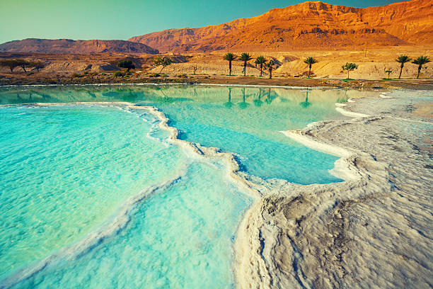

Dead Sea, Arabic Al-Baḥr Al-Mayyit (“Sea of Death”), Hebrew Yam HaMelaẖ (“Salt Sea”), also called Salt Sea, landlocked salt lake between Israel and Jordan in southwestern Asia. Its eastern shore belongs to Jordan, and the southern half of its western shore belongs to Israel. The northern half of the western shore lies within the Palestinian West Bank and has been under Israeli occupation since the 1967 Arab-Israeli war. The Jordan River, from which the Dead Sea receives nearly all its water, flows from the north into the lake.The Dead Sea has the lowest elevation and is the lowest body of water on the surface of Earth. For several decades in the mid-20th century, the standard value given for the surface level of the lake was some 1,300 feet (400 metres) below sea level. Beginning in the 1960s, however, Israel and Jordan began diverting much of the Jordan River’s flow and increased the use of the lake’s water itself for commercial purposes. The result of those activities was a precipitous drop in the Dead Sea’s water level. By the mid-2010s, measurement of the lake level was more than 100 feet (some 30 metres) below the mid-20th-century figure—i.e., about 1,410 feet (430 metres) below sea level—but the lake continued to drop by about 3 feet (1 metre) annually.The Dead Sea region occupies part of a graben (a downfaulted block of Earth’s crust) between transform faults along a tectonic plate boundary that runs northward from the Red Sea–Gulf of Suez spreading centre to a convergent plate boundary in the Taurus Mountains of southern Turkey. The eastern fault, along the edge of the Moab Plateau, is more readily visible from the lake than is the western fault, which marks the gentler Judaean upfold. In the Jurassic and Cretaceous periods (about 201 million to 66 million years ago), before the creation of the graben, an extended Mediterranean Sea covered Syria and Palestine. During the Miocene Epoch (23 million to 5.3 million years ago), as the Arabian Plate collided with the Eurasian Plate to the north, upheaval of the seabed produced the upfolded structures of the Transjordanian highlands and the central range of Palestine, causing the fractures that allowed the Dead Sea graben to drop. At that time the Dead Sea was probably about the size that it is today. During the Pleistocene Epoch (2,588,000 to 11,700 years ago), it rose to an elevation of about 700 feet (200 metres) above its modern level, forming a vast inland sea that stretched some 200 miles (320 km) from the H̱ula Valley area in the north to 40 miles (64 km) beyond its present southern limits. The Dead Sea did not spill over into the Gulf of Aqaba because it was blocked by a 100-foot (30-metre) rise in the highest part of Wadi Al-ʿArabah, a seasonal watercourse that flows in a valley to the east of the central Negev highlands.
|  |
The Dead Sea lies in a desert. Rainfall is scanty and irregular. Al-Lisān averages about 2.5 inches (65 mm) of rain a year, the industrial site of Sedom (near historical Sodom) only about 2 inches (50 mm). Because of the lake’s extremely low elevation and sheltered location, winter temperatures are mild, averaging 63 °F (17 °C) in January at the southern end at Sedom and 58 °F (14 °C) at the northern end; freezing temperatures do not occur. Summer is oppressively hot, averaging 93 °F (34 °C) in August at Sedom, with a recorded maximum of 124 °F (51 °C). Evaporation of the lake’s waters—estimated at about 55 inches (1,400 mm) per year—often creates a thick mist above the lake. On the rivers the atmospheric humidity varies from 45 percent in May to 62 percent in October. Lake and land breezes, which are relatively common, blow off the lake in all directions in the daytime and then reverse direction to blow toward the centre of the lake at night. The inflow from the Jordan River, whose high waters occur in winter and spring, once averaged some 45.5 billion cubic feet (1.3 billion cubic metres) per year. However, the subsequent diversions of the Jordan’s waters reduced the river’s flow to a small fraction of the previous amount and became the principal cause for the drop in the Dead Sea’s water level. Four modest streams descend to the lake from Jordan to the east through deep gorges: the wadis (intermittent streams) Al-ʿUẓaymī, Zarqāʾ Māʿīn, Al-Mawjib, and Al-Ḥasā. Down numerous other wadis, streams flow spasmodically and briefly from the neighbouring heights as well as from the depression of Wadi Al-ʿArabah. Thermal sulfur springs also feed the rivers. Evaporation in summer and the inflow of water, especially in winter and spring, once caused noticeable seasonal variations of 12 to 24 inches (30 to 60 cm) in the level of the lake, but those fluctuations have been overshadowed by the more-dramatic annual drops in the Dead Sea’s surface level.
The waters of the Dead Sea are extremely saline, and, generally, the concentration of salt increases toward the lake’s bottom. That phenomenon can create two different masses of water in the lake for extended periods of time. Such a situation existed for some three centuries, lasting until the late 1970s. Down to a depth of about 130 feet (40 metres), the temperature varied from 66 to 98 °F (19 to 37 °C), the salinity was slightly less than 300 parts per thousand, and the water was especially rich in sulfates and bicarbonates. Beneath a zone of transition located at depths between 130 and 330 feet (40 and 100 metres), the water had a uniform temperature of about 72 °F (22 °C) and a higher degree of salinity (approximately 332 parts per thousand); it contained hydrogen sulfide and strong concentrations of magnesium, potassium, chlorine, and bromine. The deep water was saturated with sodium chloride, which precipitated to the bottom. The deep water thus became fossilized (i.e., because it was highly salty and dense, it remained permanently on the bottom). The dramatic reduction in inflow from the Jordan River that began in the 1960s gradually increased the salinity of the upper-layer waters of the Dead Sea. By the late 1970s that water mass had become more saline (and denser) than the lower layers, but, because it remained warmer than the layers beneath it, it did not sink. By the winter of 1978–79, however, the upper-level layer had become cool and saturated enough to sink, setting off an event known as an overturn (a mixing of the water layers). Since then the trend has been toward restoring the formerly stratified water layers, but with more instances of overturning. The saline water has a high density that keeps bathers buoyant. The fresh water of the Jordan stays on the surface, and in the spring its muddy colour can be traced as it spreads southward from the point where the river empties into the Dead Sea. The lake’s extreme salinity excludes all forms of life except bacteria. Fish carried in by the Jordan or by smaller streams when in flood die quickly. Apart from the vegetation along the rivers, plant life along the shores is discontinuous and consists mainly of halophytes (plants that grow in salty or alkaline soil).